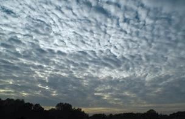
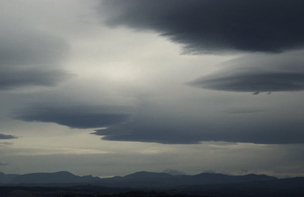
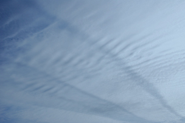
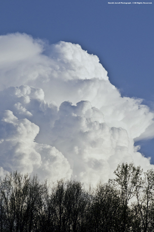
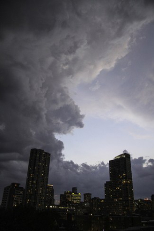
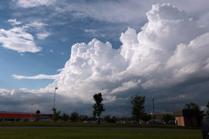
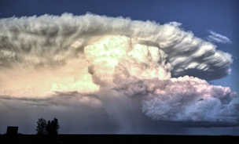
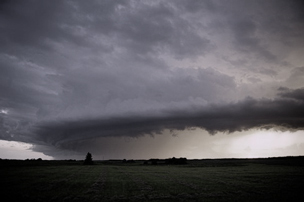
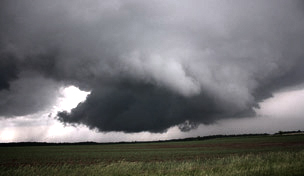
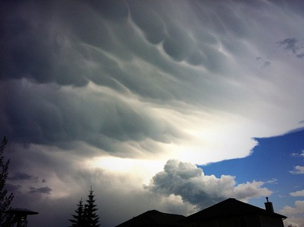

What You've Always Wanted To Know
At least once, you've looked up, thought the clouds looked pretty cool, and briefly wondered what it all meant. The good news is you don't have to be a weather man to identify different types of clouds and what they indicate. Next time you're out with friends, you can impress them with your fancy latin words and weather forecasting.
Main Types of Clouds
Stratus
These types of clouds are typically grey in colour and cover the entire sky. They typically do not reach the ground nor do they precipitate. Stratus clouds can be characterized by their hazy, flat, and featureless appearance. They also can be found having a layered effect to them.
Cumulus
Cumulus clouds are puffy clouds that have rounded off tops. When you think of how a cloud looks, this image is usually the one that pops into your mind. These clouds rest about 1000m above the ground and can grow upward, tilt, or grow in giant clumps.
Variations of Clouds
- Alto
- Cirrus
- Nimbus
- Cumulonimbus
- Cumulus Congestus
- Pileus
- Shelf Clouds
- Wall Clouds
- Mammatus Clouds
Alto
 (eg. Altocumulus, altostratus)
Clouds with the prefix alto are middle level clouds that rest 2000-7000m up in the sky. Altocumulus clouds are ones that appear as puffy masses that sometimes rolled out in parallel waves or bands. This is opposed to Altostratus clouds which are usually grey in appearance and cover the entire sky.
Cirrus
(eg. Cirrocumulus, cirrostratus)
The prefix cirro is used when clouds are thin and wispy and form at heights above 6000m. These types of high clouds are blown by strong winds into long streamers and can be seen moving across the sky from west to east. The cloud below can be classified as a cirrostratus cloud.
Nimbus
(eg. nimbostratus, cumulonimbus)
The prefix nimbo or suffix nimbus refers to precipitating clouds. From afar, you can usually see rain underneath these clouds.
Vertical Cumulonimbus
Harold Jerrell Photograph – @ All Rights Reserved
Clouds of this sort are the most common type of cloud that form in the summertime. As suggested by their name, they grow straight or vertically. They also produce an ordinary thunderstorm that typically lasts about an hour.
Tilted Cumulonimbus
Strong winds that catch a regular cumulonimbus cloud cause it to lean and fall over, resulting in this type of cloud. If you see these clouds in the sky a severe thunderstorm is probably afoot.
Cumulus Congestus
When multiple cumulus clouds form together in the atmosphere they bunch together and create one big mass of clouds. This is produced when conditions include warm temperatures and high humidity. The result is unstable air that is conductive for cloud development and numerous thunderstorms.
Pileus
The appearance of these clouds is a dead giveaway when categorizing what type of clouds they are. Also called Anvil Clouds, these clouds have a hat-like appearance. Pileus clouds form when strong and moist upper-level winds are lifted up and over the top of a cumulonimbus cloud. This causes the air to rapidly cool and form small, smooth, and rounded clouds that tower over the cumulus cloud. You don't see these clouds everyday because they are often short lived and usually only last a couple of minutes.
Shelf Clouds
These clouds are found at the front of a strong or severe thunderstorm. Shelf clouds usually cover the entire sky and form into a huge horizontal band. This happens as cold air comes out ahead of the storm which forces it to rise and quickly condense. Weather that follows these clouds include things such as squall lines and derechos.
Wall Clouds
Many people often confuse wall clouds with shelf clouds. The difference in the two is that wall clouds, unlike shelf clouds, can lead to the formation of a tornado. They also feature a localized lowering caused by a storm's updraft. This updraft causes the air to rise rapidly while lower pressure forms below the main draft. Condensation is then enhanced due to the conditions. Wall clouds take on many shapes and sizes and are the rain-free part of a storm.
Mammatus Clouds
Characterized by their pouch-like appearance, these clouds form under strong thunderstorms. These clouds are the result of strong downdrafts within the cloud. This type of cloud usually does not produce severe weather.